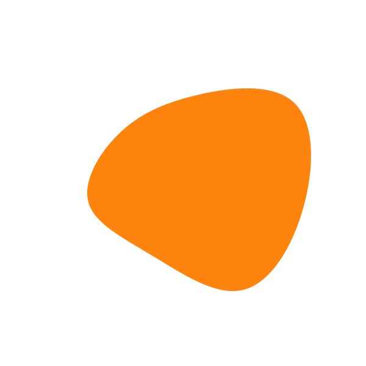
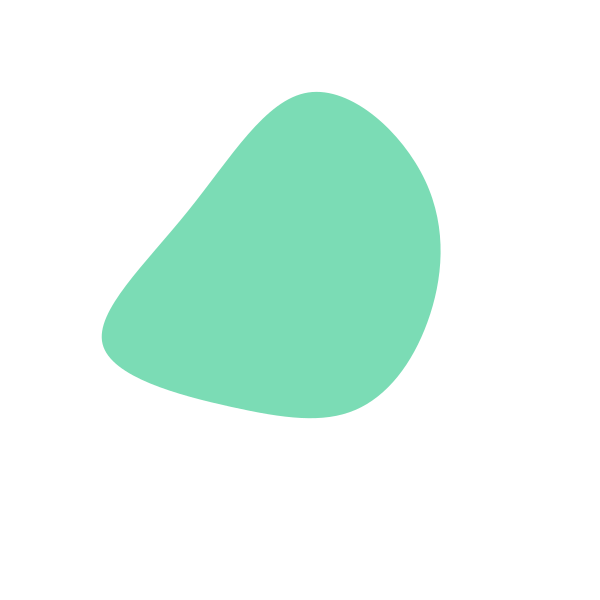
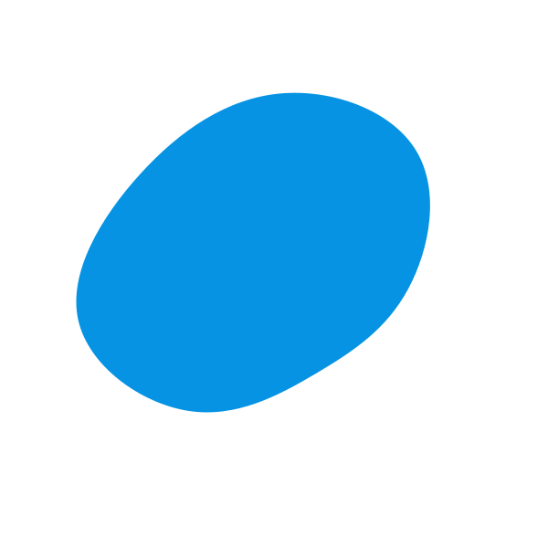

<nav>
  <a class="nav-link" (click)="openPast()" [ngClass]="{'active': isPastOpen }">past</a>
  <a class="nav-link" (click)="openPresent()" [ngClass]="{'active': isPresentOpen }">present</a>
  <a class="nav-link" (click)="openFuture()" [ngClass]="{'active': isFutureOpen }">future</a>
  <!-- <button (click)="toggleSidebar()">Toggle sidebar</button> -->
</nav>
<ng-sidebar-container>
    <!-- A sidebar -->
    <ng-sidebar [(opened)]="opened" dock="true" dockedSize="10px" mode="over" (click)="toggleSidebar()">
      <app-dashboard  
      [monday]="monday | async" 
      [tuesday]="tuesday | async" 
      [wednesday]="wednesday | async" 
      [thursday]="thursday | async" 
      [friday]="friday | async" 
      [saturday]="saturday | async" 
      [sunday]="sunday | async"
      [single]="single"
      >
    </app-dashboard>
    </ng-sidebar>
    <div ng-sidebar-content>
        <div class="future" *ngIf="isFutureOpen">
          <app-future [habits]="habits" 
                      (createHabitEmit)="createHabit($event)">
          </app-future>
        </div>
        <div class="present" *ngIf="isPresentOpen">
          <app-present 
                      [habits]="habits"
                      (completedPayload)="saveHabit($event)">
          </app-present>
        </div>
        <div class="past"  *ngIf="isPastOpen">
          <app-past   
                      [week]="week"
                      [endWeek]="endWeek"
                      [startWeek]="startWeek"
                      [toShow]="toShow | async"
                      (changeViewEmitter)="changeView($event)">
          </app-past>
        </div>        
    </div>
</ng-sidebar-container>
<!--  -->

<!-- <div style="height:200vh">
      <button (click)="openFuture()">Future</button>
      <button (click)="openPast()">Past</button>
      <button (click)="openPresent()">Present</button>

  <div class="past"  *ngIf="isPastOpen">
    <app-past
    [toShow]="toShow | async"
    (changeViewEmitter)="changeView($event)"
    ></app-past>
  </div>
  <div class="present" *ngIf="isPresentOpen">
    <app-present (completedPayload)="saveHabit($event)"  [habits]="habits"></app-present>
  </div>
</div> -->